3 Getting Started
3.1 Programming Basics
Overview
This chapter introduces the Google Earth Engine application programming interface (API) and the JavaScript syntax needed to use it. You will learn about the Code Editor environment and get comfortable typing, running, and saving scripts. You will also learn the basics of JavaScript language, such as variables, data structures, and functions.
Learning Outcomes
- Familiarity with the Earth Engine Code Editor.
- Familiarity with the JavaScript syntax.
- Ability to use the Earth Engine API functions from the Code Editor.
Assumes you know how to:
- Sign up for an Earth Engine account (See the Google documentation for details).
- Access the Earth Engine Code Editor (See the Google documentation for details).
Introduction
In order to use Earth Engine well, you will need to develop basic skills in remote sensing and programming. The language of this book is JavaScript, and you will begin by learning how to manipulate variables using it. With that base, you’ll learn about viewing individual satellite images, viewing collections of images in Earth Engine, and how common remote sensing terms are referenced and used in Earth Engine.
Google Earth Engine is a cloud-based platform for scientific data analysis. It provides ready-to-use, cloud-hosted datasets and a large pool of servers. One feature that makes Earth Engine particularly attractive is the ability to run large computations very fast by distributing them across a large pool of servers. The ability to efficiently use cloud-hosted datasets and computation is enabled by the Earth Engine API.
An API is a way to communicate with Earth Engine servers. It allows you to specify what computation you would like to do, and then to receive the results. The API is designed so that users do not need to worry about how the computation is distributed across a cluster of machines and the results are assembled. Users of the API simply specify what needs to be done. This greatly simplifies the code by hiding the implementation detail from the users. It also makes Earth Engine very approachable for users who are not familiar with writing code.
The Earth Engine platform comes with a web-based Code Editor that allows you to start using the Earth Engine JavaScript API without any installation. It also provides additional functionality to display your results on a map, save your scripts, access documentation, manage tasks, and more. It has a one-click mechanism to share your code with other users—allowing for easy reproducibility and collaboration. In addition, the JavaScript API comes with a user interface library, which allows you to create charts and web-based applications with little effort.
3.1.1 Getting Started in the Code Editor
If you have not already done so, be sure to add the book’s code repository to the Code Editor by entering https://code.earthengine.google.com/?accept_repo=projects/gee-edu/book into your browser. The book’s scripts will then be available in the script manager panel. If you have trouble finding the repo, you can visit this link for help.
The Code Editor is an integrated development environment for the Earth Engine JavaScript API. It offers an easy way to type, debug, run, and manage code. Once you have followed Google’s documentation on registering for an Earth Engine account, you should follow the documentation to open the Code Editor. When you first visit the Code Editor, you will see a screen such as the one shown in Fig. F1.0.1.

The Code Editor (Fig. F1.0.1) allows you to type JavaScript code and execute it. When you are first learning a new language and getting used to a new programming environment, it is customary to make a program to display the words “Hello World.” This is a fun way to start coding that shows you how to give input to the program and how to execute it. It also shows where the program displays the output. Doing this in JavaScript is quite simple. Copy the following code into the center panel.
print('Hello World');The line of code above uses the JavaScript print function to print the text “Hello World” to the screen. Once you enter the code, click the Run button. The output will be displayed on the upper right-hand panel under the Console tab (Fig. F1.0.2.).
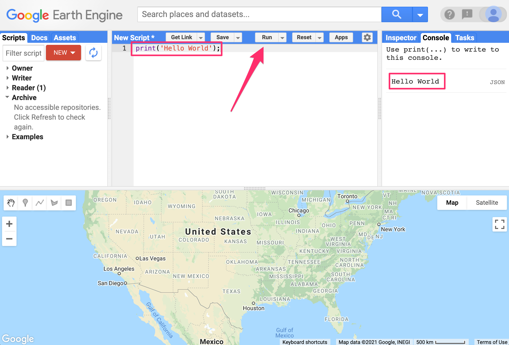
You now know where to type your code, how to run it, and where to look for the output. You just wrote your first Earth Engine script and may want to save it. Click the Save button (Fig. F1.0.3).
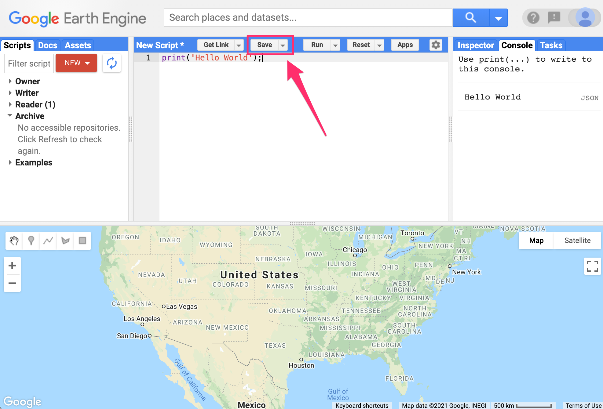
If this is your first time using the Code Editor, you will be prompted to create a home folder. This is a folder in the cloud where all your code will be saved. You can pick a name of your choice, but remember that it cannot be changed and will forever be associated with your account. A good choice for the name would be your Google Account username (Fig. F1.0.4).

Once your home folder is created, you will be prompted to enter a new repository. A repository can help you organize and share code. Your account can have multiple repositories and each repository can have multiple scripts inside it. To get started, you can create a repository named “default” (Fig. F1.0.5).

Finally, you will be able to save your script inside the newly created repository. Enter the name “hello_world” and click OK (Fig. F1.0.6).
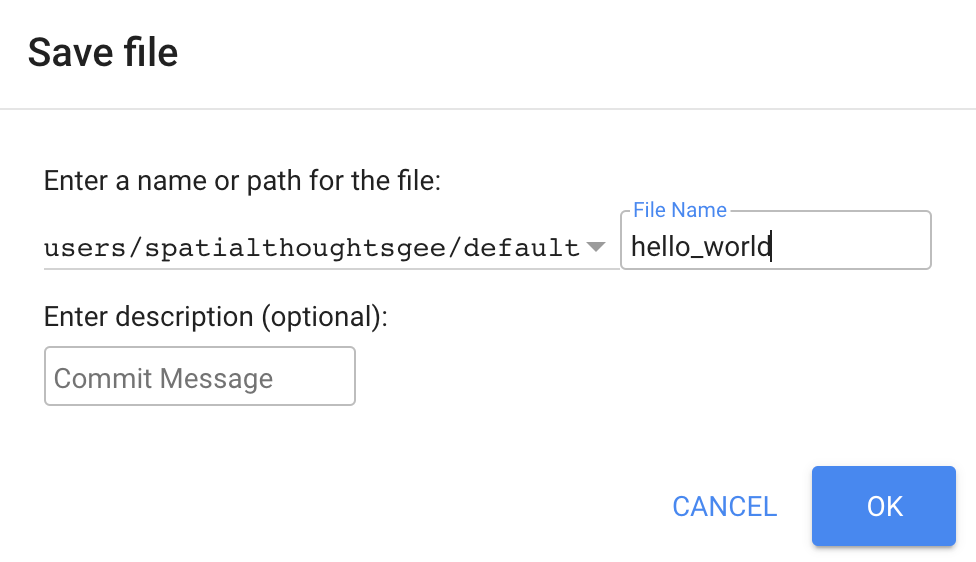
Once the script is saved, it will appear in the script manager panel (Fig. F1.0.7). The scripts are saved in the cloud and will always be available to you when you open the Code Editor.

Now you should be familiar with how to create, run, and save your scripts in the Code Editor. You are ready to start learning the basics of JavaScript.
3.1.2 JavaScript Basics
To be able to construct a script for your analysis, you will need to use JavaScript. This section covers the JavaScript syntax and basic data structures. In the sections that follow, you will see more JavaScript code, noted in a distinct font and with shaded background. As you encounter code, paste it into the Code Editor and run the script.
Variables
In a programming language, variables are used to store data values. In JavaScript, a variable is defined using the var keyword followed by the name of the variable. The code below assigns the text “San Francisco” to the variable named city. Note that the text string in the code should be surrounded by quotes. You are free to use either ’ (single quotes) or “ (double quotes), and they must match at the beginning and end of each string. In your programs, it is advisable to be consistent—use either single quotes or double quotes throughout a given script (the code in this book generally uses single quotes for code). Each statement of your script should typically end with a semicolon, although Earth Engine’s code editor does not require it.
var city = 'San Francisco';If you print the variable city, you will get the value stored in the variable (San Francisco) printed in the Console.
print(city);When you assign a text value, the variable is automatically assigned the type string. You can also assign numbers to variables and create variables of type number. The following code creates a new variable called population and assigns a number as its value.
var population = 873965;
print(population);Lists
It is helpful to be able to store multiple values in a single variable. JavaScript provides a data structure called a list that can hold multiple values. We can create a new list using the square brackets [] and adding multiple values separated by a comma.
var cities = ['San Francisco', 'Los Angeles', 'New York', 'Atlanta'];
print(cities);If you look at the output in the Console, you will see “List” with an expander arrow (▹) next to it. Clicking on the arrow will expand the list and show you its content. You will notice that along with the four items in the list, there is a number next to each value. This is the index of each item. It allows you to refer to each item in the list using a numeric value that indicates its position in the list.

Objects
Lists allow you to store multiple values in a single container variable. While useful, it is not appropriate to store structured data. It is helpful to be able to refer to each item with its name rather than its position. Objects in JavaScript allow you to store key-value pairs, where each value can be referred to by its key. You can create a dictionary using the curly braces {}. The code below creates an object called cityData with some information about San Francisco.
var cityData = {
'city': 'San Francisco',
'coordinates': [-122.4194, 37.7749],
'population': 873965
};
print(cityData);We can use multiple lines to define the object. Only when we put in the semicolon (;) is the command considered complete. The object will be printed in the Console. You can see that instead of a numeric index, each item has a label. This is known as the key and can be used to retrieve the value of an item.

Functions
While using Earth Engine, you will need to define your own functions. Functions take user inputs, use them to carry out some computation, and send an output back. Functions allow you to group a set of operations together and repeat the same operations with different parameters without having to rewrite them every time. Functions are defined using the function keyword. The code below defines a function called greet that takes an input called name and returns a greeting with Hello prefixed to it. Note that we can call the function with different input and it generates different outputs with the same code.
var greet = function(name) {
return 'Hello ' + name;
};
print(greet('World'));
print(greet('Readers'));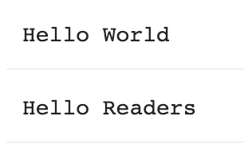
3.1.3 Earth Engine API Basics
The Earth Engine API is vast and provides objects and methods to do everything from simple math to advanced algorithms for image processing. In the Code Editor, you can switch to the Docs tab to see the API functions grouped by object types. The API functions have the prefix ee (for Earth Engine).

Let’s learn to use the API. Suppose you want to add two numbers, represented by the variables a and b, as below. Make a new script and enter the following:
var a = 1;
var b = 2;In Sect. 1, you learned how to store numbers in variables, but not how to do any computation. This is because when you use Earth Engine, you do not do addition using JavaScript operators. For example, you would not write “var c = a + b” to add the two numbers. Instead, the Earth Engine API provides you with functions to do this, and it is important that you use the API functions whenever you can. It may seem awkward at first, but using the functions, as we’ll describe below, will help you avoid timeouts and create efficient code.
Looking at the Docs tab, you will find a group of methods that can be called on an ee.Number. Expand it to see the various functions available to work with numbers. You will see the ee.Number function that creates an Earth Engine number object from a value. In the list of functions, there is an add function for adding two numbers. That’s what you use to add a and b.

To add a and b, we first create an ee.Number object from variable a with ee.Number(a). And then we can use the add(b) call to add the value of b to it. The following code shows the syntax and prints the result which, of course, is the value 3.
var result = ee.Number(a).add(b);
print(result);
By now you may have realized that when learning to program in Earth Engine, you do not need to deeply learn JavaScript or Python—instead, they are ways to access the Earth Engine API. This API is the same whether it is called from JavaScript or Python.
Here’s another example to drive this point home. Let’s say you are working on a task that requires you to create a list of years from 1980 to 2020 with a five-year interval. If you are faced with this task, the first step is to switch to the Docs tab and open the ee.List module. Browse through the functions and see if there are any functions that can help. You will notice a function ee.List.sequence. Clicking on it will bring up the documentation of the function.
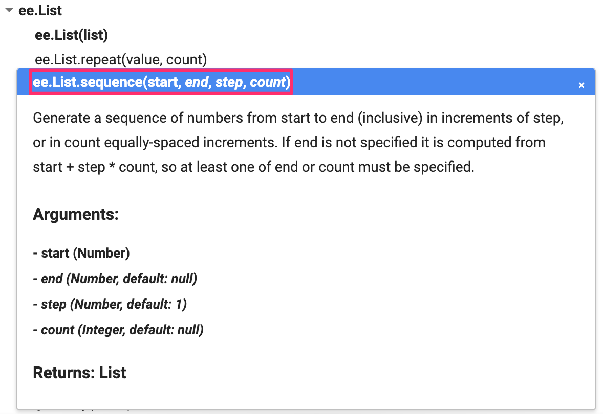
The function ee.List.sequence is able to generate a sequence of numbers from a given start value to the end value. It also has an optional parameter step to indicate the increment between each number. We can create a ee.List of numbers representing years from 1980 to 2020, counting by 5, by calling this predefined function with the following values: start = 1980, end = 2020, and step = 5.
var yearList = ee.List.sequence(1980, 2020, 5);
print(yearList);The output printed in the Console will show that the variable yearList indeed contains the list of years with the correct interval.

You just accomplished a moderately complex programming task with the help of Earth Engine API.
Code Checkpoint F10b. The book’s repository contains a script that shows what your code should look like at this point.
Conclusion
This chapter introduced the Earth Engine API. You also learned the basics of JavaScript syntax to be able to use the API in the Code Editor environment. We hope you now feel a bit more comfortable starting your journey to become an Earth Engine developer. Regardless of your programming background or familiarity with JavaScript, you have the tools at your disposal to start using the Earth Engine API to build scripts for remote sensing analysis.
3.2 Exploring Images
Overview
Satellite images are at the heart of Google Earth Engine’s power. This chapter teaches you how to inspect and visualize data stored in image bands. We first visualize individual bands as separate map layers and then explore a method to visualize three different bands in a single composite layer. We compare different kinds of composites for satellite bands that measure electromagnetic radiation in the visible and non-visible spectrum. We then explore images that represent more abstract attributes of locations, and create a composite layer to visualize change over time.
Learning Outcomes
- Using the Code Editor to load an image
- Using code to select image bands and visualize them as map layers
- Understanding true- and false-color composites of images
- Constructing new multiband images.
- Understanding how additive color works and how to interpret RGB composites.
Assumes you know how to:
- Sign up for an Earth Engine account, open the Code Editor, and save your script (Chap. F1.0).
3.2.1 Accessing an Image
If you have not already done so, be sure to add the book’s code repository to the Code Editor by entering https://code.earthengine.google.com/?accept_repo=projects/gee-edu/book into your browser. The book’s scripts will then be available in the script manager panel. If you have trouble finding the repo, you can visit this link for help.
To begin, you will construct an image with the Code Editor. In the sections that follow, you will see code in a distinct font and with shaded background. As you encounter code, paste it into the center panel of the Code Editor and click Run.
First, copy and paste the following:
var first_image = ee.Image('LANDSAT/LT05/C02/T1_L2/LT05_118038_20000606');When you click Run, Earth Engine will load an image captured by the Landsat 5 satellite on June 6, 2000. You will not yet see any output.
You can explore the image in several ways. To start, you can retrieve metadata (descriptive data about the image) by printing the image to the Code Editor’s Console panel:
print(first_image);In the Console panel, you may need to click the expander arrows to show the information. You should be able to read that this image consists of 19 different bands. For each band, the metadata lists four properties, but for now let’s simply note that the first property is a name or label for the band enclosed in quotation marks. For example, the name of the first band is “SR_B1” (Fig. F1.1.1).

A satellite sensor like Landsat 5 measures the magnitude of radiation in different portions of the electromagnetic spectrum. The first six bands in our image (“SR_B1” through “SR_B7”) contain measurements for six different portions of the spectrum. The first three bands measure visible portions of the spectrum, or quantities of blue, green, and red light. The other three bands measure infrared portions of the spectrum that are not visible to the human eye.
An image band is an example of a raster data model, a method of storing geographic data in a two-dimensional grid of pixels, or picture elements.
3.2.2 Visualizing an Image
Now let’s add one of the bands to the map as a layer so that we can see it.
Map.addLayer(first_image, // dataset to display
{bands: ['SR_B1'], // band to display
min: 8000, // display range
max: 17000},
'Layer 1' // name to show in Layer Manager
);The code here uses the addLayer method of the map in the Code Editor. There are four important components of the command above:
first_image: This is the dataset to display on the map.
bands: These are the particular bands from the dataset to display on the map. In our example, we displayed a single band named “SR_B1”.
min, max: These represent the lower and upper bounds of values from “SR_B1” to display on the screen. By default, the minimum value provided (8000) is mapped to black, and the maximum value provided (17000) is mapped to white. The values between the minimum and maximum are mapped linearly to grayscale between black and white. Values below 8000 are drawn as black. Values above 17000 are drawn as white. Together, the bands, min, and max parameters define visualization parameters, or instructions for data display.
‘Layer 1’: This is a label for the map layer to display in the Layer Manager. This label appears in the dropdown menu of layers in the upper right of the map.
When you run the code, you might not notice the image displayed unless you pan around and look for it. To do this, click and drag the map towards Shanghai, China. (You can also jump there by typing “Shanghai” into the Search panel at the top of the Code Editor, where the prompt says Search places and datasets…) Over Shanghai, you should see a small, dark, slightly angled square. Use the zoom tool (the + sign, upper left of map) to increase the zoom level and make the square appear larger.
Can you recognize any features in the image? By comparing it to the standard Google map that appears under the image (as the base layer), you should be able to distinguish the coastline. The water near the shore generally appears a little lighter than the land, except perhaps for a large, light-colored blob on the land in the bottom of the image.
Let’s explore this image with the Inspector tool. When you click on the Inspector tab on the right side of the Code Editor (Fig. F1.1.2, area A), your cursor should now look like crosshairs. When you click on a location in the image, the Inspector panel will report data for that location under three categories as follows:

Point: data about the location on the map. This includes the geographic location (longitude and latitude) and some data about the map display (zoom level and scale).
Pixels: data about the pixel in the layer. If you expand this, you will see the name of the map layer, a description of the data source, and a bar chart. In our example, we see “Layer 1” is drawn from an image dataset that contains 19 bands. Under the layer name, the chart displays the pixel value at the location that you clicked for each band in the dataset. When you hover your cursor over a bar, a panel will pop up to display the band name and “band value” (pixel value). To find the pixel value for “SR_B1”, hover the cursor over the first bar on the left. Alternatively, by clicking on the little blue icon to the right of “Layer 1” (Fig. F1.1.2, area B), you will change the display from a bar chart to a dictionary that reports the pixel value for each band.
Objects: data about the source dataset. Here you will find metadata about the image that looks very similar to what you retrieved earlier when you directed Earth Engine to print the image to the Console.
Let’s add two more bands to the map.
Map.addLayer(
first_image,
{bands: ['SR_B2'],
min: 8000,
max: 17000},
'Layer 2',
0, // shown
1 // opacity
);
Map.addLayer(
first_image,
{bands: ['SR_B3'],
min: 8000,
max: 17000},
'Layer 3',
1, // shown
0 // opacity
);In the code above, notice that we included two additional parameters to the Map.addLayer call. One parameter controls whether or not the layer is shown on the screen when the layer is drawn. It may be either 1 (shown) or 0 (not shown). The other parameter defines the opacity of the layer, or your ability to “see through” the map layer. The opacity value can range between 0 (transparent) and 1 (opaque).
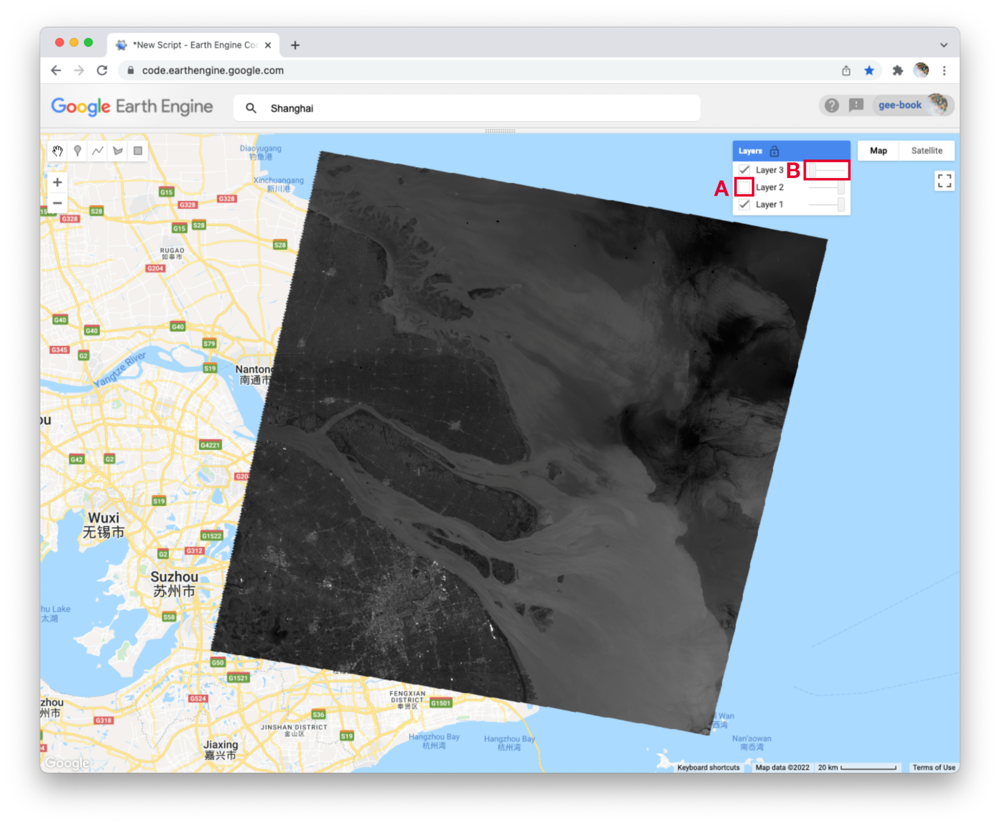
Do you see how these new parameters influence the map layer displays (Fig. F1.1.3)? For Layer 2, we set the shown parameter as 0. For Layer 3, we set the opacity parameter as 0. As a result, neither layer is visible to us when we first run the code. We can make each layer visible with controls in the Layers manager checklist on the map (at top right). Expand this list and you should see the names that we gave each layer when we added them to the map. Each name sits between a checkbox and an opacity slider. To make Layer 2 visible, click the checkbox (Fig. F1.1.3, area A). To make Layer 3 visible, move the opacity slider to the right (Fig. F1.1.3, area B).
By manipulating these controls, you should notice that these layers are displayed as a stack, meaning one on top of the other. For example, set the opacity for each layer to be 1 by pushing the opacity sliders all the way to the right. Then make sure each box is checked next to each layer so that all the layers are shown. Now you can identify which layer is on top of the stack by checking and unchecking each layer. If a layer is on top of another, unchecking the top layer will reveal the layer underneath. If a layer is under another layer in the stack, then unchecking the bottom layer will not alter the display (because the top layer will remain visible). If you try this on our stack, you should see that the list order reflects the stack order, meaning that the layer at the top of the layer list appears on the top of the stack. Now compare the order of the layers in the list to the sequence of operations in your script. What layer did your script add first and where does this appear in the layering order on the map?
Code Checkpoint F11a. The book’s repository contains a script that shows what your code should look like at this point.
3.2.3 True-Color Composites
Using the controls in the Layers manager, explore these layers and examine how the pixel values in each band differ. Does Layer 2 (displaying pixel values from the “SR_B2” band) appear generally brighter than Layer 1 (the “SR_B1” band)? Compared with Layer 2, do the ocean waters in Layer 3 (the “SR_B3” band) appear a little darker in the north, but a little lighter in the south?
We can use color to compare these visual differences in the pixel values of each band layer all at once as an RGB composite. This method uses the three primary colors (red, green, and blue) to display each pixel’s values across three bands.
To try this, add this code and run it.
Map.addLayer(
first_image,
{bands: ['SR_B3', 'SR_B2', 'SR_B1'],
min: 8000,
max: 17000},
'Natural Color');The result (Fig. F1.1.4) looks like the world we see, and is referred to as a natural-color composite, because it naturally pairs the spectral ranges of the image bands to display colors. Also called a true-color composite, this image shows the red spectral band with shades of red, the green band with shades of green, and the blue band with shades of blue. We specified the pairing simply through the order of the bands in the list: B3, B2, B1. Because bands 3, 2, and 1 of Landsat 5 correspond to the real-world colors of red, green, and blue, the image resembles the world that we would see outside the window of a plane or with a low-flying drone.

3.2.4 False-Color Composites
As you saw when you printed the band list (Fig. F1.1.1), a Landsat image contains many more bands than just the three true-color bands. We can make RGB composites to show combinations of any of the bands—even those outside what the human eye can see. For example, band 4 represents the near-infrared band, just outside the range of human vision. Because of its value in distinguishing environmental conditions, this band was included on even the earliest 1970s Landsats. It has different values in coniferous and deciduous forests, for example, and can indicate crop health. To see an example of this, add this code to your script and run it.
Map.addLayer(
first_image,
{bands: ['SR_B4', 'SR_B3', 'SR_B2'],
min: 8000,
max: 17000},
'False Color');In this false-color composite (Fig. F1.1.5), the display colors no longer pair naturally with the bands. This particular example, which is more precisely referred to as a color-infrared composite, is a scene that we could not observe with our eyes, but that you can learn to read and interpret. Its meaning can be deciphered logically by thinking through what is passed to the red, green, and blue color channels.
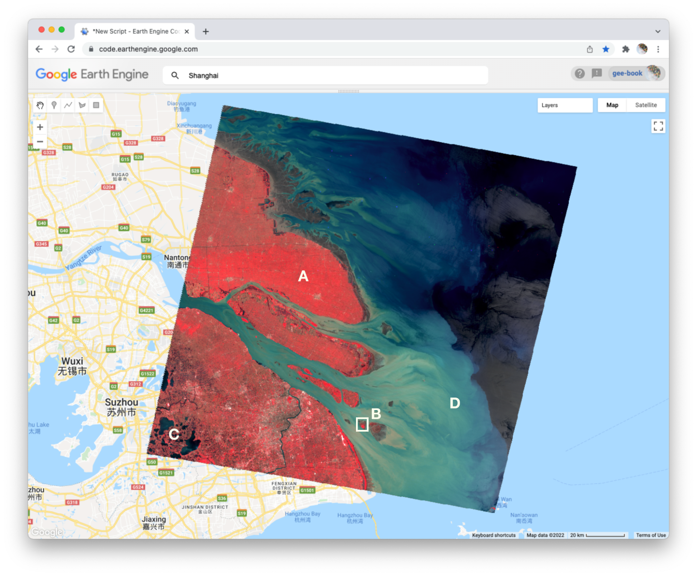
Notice how the land on the northern peninsula appears bright red (Fig. F1.1.5, area A). This is because for that area, the pixel value of the first band (which is drawing the near-infrared brightness) is much higher relative to the pixel value of the other two bands. You can check this by using the Inspector tool. Try zooming into a part of the image with a red patch (Fig. F1.1.5, area B) and clicking on a pixel that appears red. Then expand the “False Color” layer in the Inspector panel (Fig. F1.1.6, area A), click the blue icon next to the layer name (Fig. F1.1.6, area B), and read the pixel value for the three bands of the composite (Fig. F1.1.6, area C). The pixel value for B4 should be much greater than for B3 or B2.

In the bottom left corner of the image (Fig. F1.1.5, area C), rivers and lakes appear very dark, which means that the pixel value in all three bands is low. However, sediment plumes fanning from the river into the sea appear with blue and cyan tints (Fig. F1.1.5, area D). If they look like primary blue, then the pixel value for the second band (B3) is likely higher than the first (B4) and third (B2) bands. If they appear more like cyan, an additive color, it means that the pixel values of the second and third bands are both greater than the first.
In total, the false-color composite provides more contrast than the true-color image for understanding differences across the scene. This suggests that other bands might contain more useful information as well. We saw earlier that our satellite image consisted of 19 bands. Six of these represent different portions of the electromagnetic spectrum, including three beyond the visible spectrum, that can be used to make different false-color composites. Use the code below to explore a composite that shows shortwave infrared, near infrared, and visible green (Fig. F1.1.7).
Map.addLayer(
first_image,
{bands: ['SR_B5', 'SR_B4', 'SR_B2'],
min: 8000,
max: 17000}, 'Short wave false color');
To compare the two false-color composites, zoom into the area shown in the two pictures of Fig. F1.1.8. You should notice that bright red locations in the left composite appear bright green in the right composite. Why do you think that is? Does the image on the right show new distinctions not seen in the image on the left? If so, what do you think they are?


Code Checkpoint F11b. The book’s repository contains a script that shows what your code should look like at this point.
3.2.5 Attributes of Locations
So far, we have explored bands as a method for storing data about slices of the electromagnetic spectrum that can be measured by satellites. Now we will work towards applying the additive color system to bands that store non-optical and more abstract attributes of geographic locations.
To begin, add this code to your script and run it.
var lights93 = ee.Image('NOAA/DMSP-OLS/NIGHTTIME_LIGHTS/F101993');
print('Nighttime lights', lights93);
Map.addLayer(
lights93,
{
bands: ['stable_lights'],
min: 0,
max: 63 }, 'Lights');This code loads an image of global nighttime lights and adds a new layer to the map. Please look at the metadata that we printed to the Console panel. You should see that the image consists of four bands. The code selects the “stable_lights” band to display as a layer to the map. The range of values for display (0–63) represent the minimum and maximum pixel values in this image. As mentioned earlier, you can find this range in the Earth Engine Data Datalog or with other Earth Engine methods. These will be described in more detail in the next few chapters.
The global nighttime lights image represents the average brightness of nighttime lights at each pixel for a calendar year. For those of us who have sat by a window in an airplane as it descends to a destination at night, the scene may look vaguely familiar. But the image is very much an abstraction. It provides us a view of the planet that we would never be able to see from an airplane or even from space. Night blankets the entire planet in darkness. There are no clouds. In the “stable lights” band, there are no ephemeral sources of light. Lightning strikes, wildfires, and other transient lights have been removed. It is a layer that aims to answer one question about our planet at one point in time: In 1993, how bright were Earth’s stable, artificial sources of light?
With the zoom controls on the map, you can zoom out to see the bright spot of Shanghai, the large blob of Seoul to the north and east, the darkness of North Korea except for the small dot of Pyongyang, and the dense strips of lights of Japan and the west coast of Taiwan (Fig. F1.1.10).

3.2.6 Abstract RGB Composites
Now we can use the additive color system to make an RGB composite that compares stable nighttime lights at three different slices of time. Add the code below to your script and run it.
var lights03 = ee.Image('NOAA/DMSP-OLS/NIGHTTIME_LIGHTS/F152003')
.select('stable_lights').rename('2003');
var lights13 = ee.Image('NOAA/DMSP-OLS/NIGHTTIME_LIGHTS/F182013')
.select('stable_lights').rename('2013');
var changeImage = lights13.addBands(lights03)
.addBands(lights93.select('stable_lights').rename('1993'));
print('change image', changeImage);
Map.addLayer(
changeImage,
{min: 0,
max: 63},
'Change composite');This code does a few things. First, it creates two new images, each representing a different slice of time. For both, we use the select method to select a band (“stable_lights”) and the rename method to change the band name to indicate the year it represents.
Next, the code uses the addBands method to create a new, three-band image that we name “changeImage”. It does this by taking one image (lights13) as the first band, using another image (lights03) as the second band, and the lights93 image seen earlier as the third band. The third band is given the name “1993” as it is placed into the image.
Finally, the code prints metadata to the Console and adds the layer to the map as an RGB composite using Map.addLayer. If you look at the printed metadata, you should see under the label “change image” that our image is composed of three bands, with each band named after a year. You should also notice the order of the bands in the image: 2013, 2003, 1993. This order determines the color channels used to represent each slice of time in the composite: 2013 as red, 2003 as green, and 1993 as blue (Fig. F1.1.11).
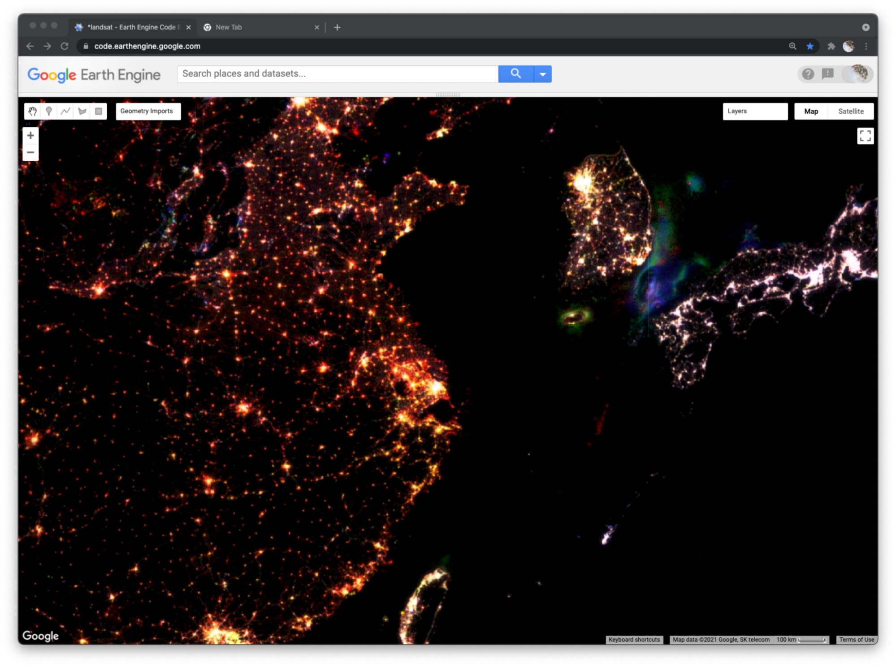
We can now read the colors displayed on the layer to interpret different kinds of changes in nighttime lights across the planet over two decades. Pixels that appear white have high brightness in all three years. You can use the Inspector panel to confirm this. Click on the Inspector panel to change the cursor to a crosshair and then click on a pixel that appears white. Look under the Pixel category of the Inspector panel for the “Change composite” layer. The pixel value for each band should be high (at or near 63).
Many clumps of white pixels represent urban cores. If you zoom into Shanghai, you will notice that the periphery of the white-colored core appears yellowish and the terminal edges appear reddish. Yellow represents locations that were bright in 2013 and 2003 but dark in 1993. Red represents locations that appear bright in 2013 but dark in 2003 and 1993. If you zoom out, you will see this gradient of white core to yellow periphery to red edge occurs around many cities across the planet, and shows the global pattern of urban sprawl over the 20-year period.
When you zoom out from Shanghai, you will likely notice that each map layer redraws every time you change the zoom level. In order to explore the change composite layer more efficiently, use the Layer manager panel to not show (uncheck) all of the layers except for “Change composite.” Now the map will respond faster when you zoom and pan because it will only refresh the single displayed shown layer.
In addition to urban change, the layer also shows changes in resource extraction activities that produce bright lights. Often, these activities produce lights that are stable over the span of a year (and therefore included in the “stable lights” band), but are not sustained over the span of a decade or more. For example, in the Korea Strait (between South Korea and Japan), you can see geographic shifts of fishing fleets that use bright halogen lights to attract squid and other sea creatures towards the water surface and into their nets. Bluish pixels were likely fished more heavily in 1993 and became used less frequently by 2003, while greenish pixels were likely fished more heavily in 2003 and less frequently by 2013 (Fig. F1.1.11).

Similarly, fossil fuel extraction produces nighttime lights through gas flaring. If you pan to North America (Fig. F1.1.12), red blobs in Alberta and North Dakota and a red swath in southeastern Texas all represent places where oil and gas extraction were absent in 1993 and 2003 but booming by 2013. Pan over to the Persian Gulf and you will see changes that look like holiday lights with dots of white, red, green, and blue appearing near each other; these distinguish stable and shifting locations of oil production. Blue lights in Syria near the border with Iraq signify the abandonment of oil fields after 1993 (Fig. F1.1.13). Pan further north and you will see another “holiday lights” display from oil and gas extraction around Surgut, Russia. In many of these places, you can check for oil and gas infrastructure by zooming in to a colored spot, making the lights layer not visible, and selecting the Satellite base layer (upper right).

As you explore this image, remember to check your interpretations with the Inspector panel by clicking on a pixel and reading the pixel value for each band. Refer back to the additive color figure to remember how the color system works. If you practice this, you should be able to read any RGB composite by knowing how colors relate to the relative pixel value of each band. This will empower you to employ false-color composites as a flexible and powerful method to explore and interpret geographic patterns and changes on Earth’s surface.
Code Checkpoint F11c. The book’s repository contains a script that shows what your code should look like at this point.
Conclusion
In this chapter, we looked at how an image is composed of one or more bands, where each band stores data about geographic locations as pixel values. We explored different ways of visualizing these pixel values as map layers, including a grayscale display of single bands and RGB composites of three bands. We created natural and false-color composites that use additive color to display information in visible and non-visible portions of the spectrum. We examined additive color as a general system for visualizing pixel values across multiple bands. We then explored how bands and RGB composites can be used to represent more abstract phenomena, including different kinds of change over time.
3.3 Survey of Raster Datasets
The previous chapter introduced you to images, one of the core building blocks of remotely sensed imagery in Earth Engine. In this chapter, we will expand on this concept of images by introducing image collections. Image collections in Earth Engine organize many different images into one larger data storage structure. Image collections include information about the location, date collected, and other properties of each image, allowing you to sift through the ImageCollection for the exact image characteristics needed for your analysis.
Overview
The purpose of this chapter is to introduce you to the many types of collections of images available in Google Earth Engine. These include sets of individual satellite images, pre-made composites (which merge multiple individual satellite images into one composite image), classified land use and land cover (LULC) maps, weather data, and other types of datasets. If you are new to JavaScript or programming, work through Chaps. F1.0 and F1.1 first.
Learning Outcomes
- Accessing and viewing sets of images in Earth Engine.
- Extracting single scenes from collections of images.
- Applying visualization parameters in Earth Engine to visualize an image.
Assumes you know how to:
- Sign up for an Earth Engine account, open the Code Editor, and save your script. (Chap. F1.0)
- Locate the Earth Engine Inspector and Console tabs and understand their purposes (Chap. F1.0).
- Use the Inspector tab to assess pixel values (Chap. F1.1).
3.3.1 Image Collections: An Organized Set of Images
There are many different types of image collections available in Earth Engine. These include collections of individual satellite images, pre-made composites that combine multiple images into one blended image, classified LULC maps, weather data, and other non-optical data sets. Each one of these is useful for different types of analyses. For example, one recent study examined the drivers of wildfires in Australia (Sulova and Jokar 2021). The research team used the European Center for Medium-Range Weather Forecast Reanalysis (ERA5) dataset produced by the European Center for Medium-Range Weather Forecasts (ECMWF) and is freely available in Earth Engine. We will look at this dataset later in the chapter.
You saw some of the basic ways to interact with an individual ee.Image in the previous chapter. However, depending on how long a remote sensing platform has been in operation, there may be thousands or millions of images collected of Earth. In Earth Engine, these are organized into an ImageCollection, a specialized data type that has specific operations available in the Earth Engine API. Like individual images, they can be viewed with Map.addLayer.
3.3.2 View an Image Collection
The Landsat program from NASA and the United States Geological Survey (USGS) has launched a sequence of Earth observation satellites, named Landsat 1, 2, etc. Landsats have been returning images since 1972, making that collection of images the longest continuous satellite-based observation of the Earth’s surface. We will now view images and basic information about one of the image collections that is still growing: collections of scenes taken by the Operational Land Imager aboard Landsat 8, which was launched in 2013. Copy and paste the following code into the center panel and click Run. While the enormous image catalog is accessed, it could take a couple of minutes to see the result in the Map area. If it takes more than a couple of minutes to see the images, try zooming in to a specific area to speed up the process.
/////
// View an Image Collection
/////
// Import the Landsat 8 Raw Collection.
var landsat8 = ee.ImageCollection('LANDSAT/LC08/C02/T1');
// Print the size of the Landsat 8 dataset.
print(
'The size of the Landsat 8 image collection is:',
landsat8.size()
);
// Try to print the image collection.
// WARNING! Running the print code immediately below produces an error because
// the Console can not print more than 5000 elements.
print(landsat8);
// Add the Landsat 8 dataset to the map as a mosaic. The collection is
// already chronologically sorted, so the most recent pixel is displayed.
Map.addLayer(landsat8,
{bands: ['B4', 'B3', 'B2'],
min: 5000,
max: 15000},
'Landsat 8 Image Collection'
);First, let’s examine the map output (Fig. F1.2.1).

Notice the high amount of cloud cover, and the “layered” look. Zoom out if needed. This is because Earth Engine is drawing each of the images that make up the ImageCollection one on top of the other. The striped look is the result of how the satellite collects imagery. The overlaps between images and the individual nature of the images mean that these are not quite ready for analysis; we will address this issue in future chapters.
Now examine the printed size on the Console. It will indicate that there are more than a million images in the dataset (Fig. F1.2.2). If you return to this lab in the future, the number will be even larger, since this active collection is continually growing as the satellite gathers more imagery. For the same reason, Fig. F1.2.1 might look slightly different on your map because of this.
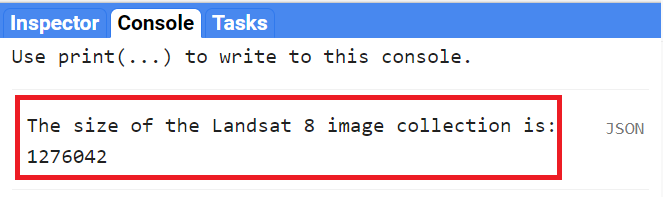
Note that printing the ImageCollection returned an error message (Fig. F1.2.3), because calling print on an ImageCollection will write the name of every image in the collection to the Console. This is the result of an intentional safeguard within Earth Engine. We don’t want to see a million image names printed to the Console!

Code Checkpoint F12a. The book’s repository contains a script that shows what your code should look like at this point.
Edit your code to comment out the last two code commands you have written. This will remove the call to Map.addLayer that drew every image, and will remove the print statement that demanded more than 5000 elements. This will speed up your code in subsequent sections. Placing two forward slashes (//) at the beginning of a line will make it into a comment, and any commands on that line will not be executed.
3.3.3 Filtering Image Collections
The ImageCollection data type in Earth Engine has multiple approaches to filtering, which helps to pinpoint the exact images you want to view or analyze from the larger collection.
3.3.3.1 Filter by Date
One of the filters is filterDate, which allows us to narrow down the date range of the ImageCollection. Copy the following code to the center panel (paste it after the previous code you had):
/////
// Filter an Image Collection
/////
// Filter the collection by date.
var landsatWinter = landsat8.filterDate('2020-12-01', '2021-03-01');
Map.addLayer(landsatWinter,
{bands: ['B4', 'B3', 'B2'],
min: 5000,
max: 15000},
'Winter Landsat 8');
print('The size of the Winter Landsat 8 image collection is:',
landsatWinter.size());Examine the mapped landsatWinter (Fig. F1.2.4). As described in the previous chaper, the 5000 and the 15000 values in the visualization parameters of the Map.addLayer function of the code above refer to the minimum and maximum of the range of display values.

Now look at the size of the winter Landsat 8 collection. The number is significantly lower than the number of images in the entire collection. This is the result of filtering the dates to three months in the winter of 2020–2021.
3.3.3.2 Filter by Location
A second frequently used filtering tool is filterBounds. This filter is based on a location—for example, a point, polygon, or other geometry. Copy and paste the code below to filter and add to the map the winter images from the Landsat 8 Image Collection to a point in Minneapolis, Minnesota, USA. Note below the Map.addLayer function to add the pointMN to the map with an empty dictionary {} for the visParams argument. This only means that we are not specifying visualization parameters for this element, and it is being added to the map with the default parameters.
// Create an Earth Engine Point object.
var pointMN = ee.Geometry.Point([-93.79, 45.05]);
// Filter the collection by location using the point.
var landsatMN = landsatWinter.filterBounds(pointMN);
Map.addLayer(
landsatMN,
{bands: ['B4', 'B3', 'B2'],
min: 5000,
max: 15000},
'MN Landsat 8');
// Add the point to the map to see where it is.
Map.addLayer(pointMN, {}, 'Point MN');
print('The size of the Minneapolis Winter Landsat 8 image collection is: ',
landsatMN.size());If we uncheck the Winter Landsat 8 layer under Layers, we can see that only images that intersect our point have been selected (Fig. F1.2.5). Zoom in or out as needed. Note the printed size of the Minneapolis winter collection—we only have seven images.

The first still represents the map without zoom applied. The collection is shown inside the red circle. The second still represents the map after zoom was applied to the region. The red arrow indicates the point (in black) used to filter by bounds.
3.3.3.3 Selecting the First Image
The final operation we will explore is the first function. This selects the first image in an ImageCollection. This allows us to place a single image on the screen for inspection. Copy and paste the code below to select and view the first image of the Minneapolis Winter Landsat 8 Image Collection. In this case, because the images are stored in time order in the ImageCollection, it will select the earliest image in the set.
// Select the first image in the filtered collection.
var landsatFirst = landsatMN.first();
// Display the first image in the filtered collection.
Map.centerObject(landsatFirst, 7);
Map.addLayer(
landsatFirst,
{bands: ['B4', 'B3', 'B2'],
min: 5000,
max: 15000},
'First Landsat 8');The first command takes our stack of location-filtered images and selects the first image. When the layer is added to the Map area, you can see that only one image is returned—remember to uncheck the other layers to be able to visualize the full image (Fig. F1.2.6). We used the Map.centerObject to center the map on the landsatFirst image with a zoom level of 7 (zoom levels go from 0 to 24).

Code Checkpoint F12b. The book’s repository contains a script that shows what your code should look like at this point.
Now that we have the tools to examine different image collections, we will explore other datasets.
3.3.4 Collections of Single Images
When learning about image collections in the previous section, you worked with the Landsat 8 raw image dataset. These raw images have some important corrections already done for you. However, the raw images are only one of several image collections produced for Landsat 8. The remote sensing community has developed additional imagery corrections that help increase the accuracy and consistency of analyses. The results of each of these different imagery processing paths is stored in a distinct ImageCollection in Earth Engine.
Among the most prominent of these is the ImageCollection meant to minimize the effect of the atmosphere between Earth’s surface and the satellite. The view from satellites is made imprecise by the need for light rays to pass through the atmosphere, even on the clearest day. There are two important ways the atmosphere obscures a satellite’s view: by affecting the amount of sunlight that strikes the Earth, and by altering electromagnetic energy on its trip from its reflection at Earth’s surface to the satellite’s receptors.
Unraveling those effects is called atmospheric correction, a highly complex process whose details are beyond the scope of this book. Thankfully, in addition to the raw images from the satellite, each image for Landsat and certain other sensors is automatically treated with the most up-to-date atmospheric correction algorithms, producing a product referred to as a “surface reflectance” ImageCollection. The surface reflectance estimates the ratio of upward radiance at the Earth’s surface to downward radiance at the Earth’s surface, imitating what the sensor would have seen if it were hovering a few feet above the ground.
Let’s examine one of these datasets meant to minimize the effects of the atmosphere between Earth’s surface and the satellite. Copy and paste the code below to import and filter the Landsat 8 surface reflectance data (landsat8SR) by date and to a point over San Francisco, California, USA (pointSF). We use the first function to select the first image—a single image from March 18, 2014. By printing the landsat8SRimage image on the Console, and accessing its metadata (see Chap. F1.1), we see that the band names differ from those in the raw image (Fig. F1.2.7). Here, they have the form “SR_B” as in “Surface Reflectance Band ”, where * is the band number. We can also check the date of the image by looking at the image “id” (Fig. F1.2.7). This has the value “20140318”, a string indicating that the image was from March 18, 2014.
/////
// Collections of single images - Landsat 8 Surface Reflectance
/////
// Create and Earth Engine Point object over San Francisco.
var pointSF = ee.Geometry.Point([-122.44, 37.76]);
// Import the Landsat 8 Surface Reflectance collection.
var landsat8SR = ee.ImageCollection('LANDSAT/LC08/C02/T1_L2');
// Filter the collection and select the first image.
var landsat8SRimage = landsat8SR.filterDate('2014-03-18', '2014-03-19')
.filterBounds(pointSF)
.first();
print('Landsat 8 Surface Reflectance image', landsat8SRimage);
Copy and paste the code below to add this image to the map with adjusted R,G, and B bands in the “bands” parameter for true-color display (see previous chapter).
// Center map to the first image.
Map.centerObject(landsat8SRimage, 8);
// Add first image to the map.
Map.addLayer(landsat8SRimage,
{bands: ['SR_B4', 'SR_B3', 'SR_B2'],
min: 7000,
max: 13000},
'Landsat 8 SR');
Compare this image (Fig. F1.2.8) with the raw Landsat 8 images from the previous section (Fig. F1.2.6). Zoom in and out and pan the screen as needed. What do you notice? Save your script but don’t start a new one—we will keep adding code to this script.
Code Checkpoint F12c. The book’s repository contains a script that shows what your code should look like at this point.
3.3.5 MODIS Monthly Burned Areas
We’ll explore two examples of composites made with data from the MODIS sensors, a pair of sensors aboard the Terra and Aqua satellites. On these complex sensors, different MODIS bands produce data at different spatial resolutions. For the visible bands, the lowest common resolution is 500 m (red and NIR are 250 m).
Some of the MODIS bands have proven useful in determining where fires are burning and what areas they have burned. A monthly composite product for burned areas is available in Earth Engine. Copy and paste the code below.
// Import the MODIS monthly burned areas dataset.
var modisMonthly = ee.ImageCollection('MODIS/006/MCD64A1');
// Filter the dataset to a recent month during fire season.
var modisMonthlyRecent = modisMonthly.filterDate('2021-08-01');
// Add the dataset to the map.
Map.addLayer(modisMonthlyRecent, {}, 'MODIS Monthly Burn');Uncheck the other layers, and then pan and zoom around the map. Areas that have burned in the past month will show up as red (Fig. F1.2.11). Can you see where fires burned areas of California, USA? In Southern and Central Africa? Northern Australia?

Code Checkpoint F12d. The book’s repository contains a script that shows what your code should look like at this point.
Save your script and start a new one by refreshing the page.
3.3.6 Methane
Satellites can also collect information about the climate, weather, and various compounds present in the atmosphere. These satellites leverage portions of the electromagnetic spectrum and how different objects and compounds reflect when hit with sunlight in various wavelengths. For example, methane (CH4) reflects the 760 nm portion of the spectrum. Let’s take a closer look at a few of these datasets.
The European Space Agency makes available a methane dataset from Sentinel-5 in Earth Engine. Copy and paste the code below to add to the map methane data from the first time of collection on November 28, 2018. We use the select function (See Chap. F1.1) to select the methane-specific band of the dataset. We also introduce values for a new argument for the visualization parameters of Map.addLayer: We use a color palette to display a single band of an image in color. Here, we chose varying colors from black for the minimum value to red for the maximum value. Values in
between will have the color in the order outlined by the palette parameter (a list of string colors: blue, purple, cyan, green, yellow, red).
/////
// Other satellite products
/////
// Import a Sentinel-5 methane dataset.
var methane = ee.ImageCollection('COPERNICUS/S5P/OFFL/L3_CH4');
// Filter the methane dataset.
var methane2018 = methane.select( 'CH4_column_volume_mixing_ratio_dry_air')
.filterDate('2018-11-28', '2018-11-29')
.first();
// Make a visualization for the methane data.
var methaneVis = {
palette: ['black', 'blue', 'purple', 'cyan', 'green', 'yellow', 'red' ],
min: 1770,
max: 1920
};
// Center the Map.
Map.centerObject(methane2018, 3);
// Add the methane dataset to the map.
Map.addLayer(methane2018, methaneVis, 'Methane');Notice the different levels of methane over the African continent (Fig. F1.2.12).

3.3.7 Global Forest Change
Another useful land cover product that has been pre-classified for you and is available in Earth Engine is the Global Forest Change dataset. This analysis was conducted between 2000 and 2020. Unlike the WorldCover dataset, this dataset focuses on the percent of tree cover across the Earth’s surface in a base year of 2000, and how that has changed over time. Copy and paste the code below to visualize the tree cover in 2000. Note that in the code below we define the visualization parameters as a variable treeCoverViz instead of having its calculation done within the Map.addLayer function.
// Import the Hansen Global Forest Change dataset.
var globalForest = ee.Image( 'UMD/hansen/global_forest_change_2020_v1_8');
// Create a visualization for tree cover in 2000.
var treeCoverViz = {
bands: ['treecover2000'],
min: 0,
max: 100,
palette: ['black', 'green']
};
// Add the 2000 tree cover image to the map.
Map.addLayer(globalForest, treeCoverViz, 'Hansen 2000 Tree Cover');Notice how areas with high tree cover (e.g., the Amazon) are greener and areas with low tree cover are darker (Fig. F1.2.15). In case you see an error on the Console such as “Cannot read properties of null,” don’t worry. Sometimes Earth Engine will show these transient errors, but they won’t affect the script in any way.

Copy and paste the code below to visualize the tree cover loss over the past 20 years.
// Create a visualization for the year of tree loss over the past 20 years.
var treeLossYearViz = {
bands: ['lossyear'],
min: 0,
max: 20,
palette: ['yellow', 'red']
};
// Add the 2000-2020 tree cover loss image to the map.
Map.addLayer(globalForest, treeLossYearViz, '2000-2020 Year of Loss');Leave the previous 2000 tree cover layer checked and analyze the loss layer on top of it—yellow, orange, and red areas (Fig. F1.2.16). Pan and zoom around the map. Where has there been recent forest loss (which is shown in red)?

Code Checkpoint F12f. The book’s repository contains a script that shows what your code should look like at this point.
Save your script and start a new one.
3.3.8 Digital Elevation Models
Digital elevation models (DEMs) use airborne and satellite instruments to estimate the elevation of each location. Earth Engine has both local and global DEMs available. One of the global DEMs available is the NASADEM dataset, a DEM produced from a NASA mission. Copy and paste the code below to import the dataset and visualize the elevation band.
// Import the NASA DEM Dataset.
var nasaDEM = ee.Image('NASA/NASADEM_HGT/001');
// Add the elevation layer to the map.
Map.addLayer(nasaDEM, {
bands: ['elevation'],
min: 0,
max: 3000}, 'NASA DEM');Uncheck the population layer and zoom in to examine the patterns of topography (Fig. F1.2.18). Can you see where a mountain range is located? Where is a river located? Try changing the minimum and maximum in order to make these features more visible. Save your script.

Fig. F1.2.18. NASADEM elevation
Code Checkpoint F12g. The book’s repository contains a script that shows what your code should look like at this point.
Conclusion
In this chapter, we introduced image collections in Earth Engine and learned how to apply multiple types of filters to image collections to identify multiple or a single image for use. We also explored a few of the many different image collections available in the Earth Engine Data Catalog. Understanding how to find, access, and filter image collections is an important step in learning how to perform spatial analyses in Earth Engine.
References
Chander G, Huang C, Yang L, et al (2009) Developing consistent Landsat data sets for large area applications: The MRLC 2001 protocol. IEEE Geosci Remote Sens Lett 6:777–781. https://doi.org/10.1109/LGRS.2009.2025244
Chander G, Markham BL, Helder DL (2009) Summary of current radiometric calibration coefficients for Landsat MSS, TM, ETM+, and EO-1 ALI sensors. Remote Sens Environ 113:893–903. https://doi.org/10.1016/j.rse.2009.01.007
Hansen MC, Potapov PV, Moore R, et al (2013) High-resolution global maps of 21st-century forest cover change. Science 342:850–853. https://doi.org/10.1126/science.1244693
Sulova A, Arsanjani JJ (2021) Exploratory analysis of driving force of wildfires in Australia: An application of machine learning within Google Earth Engine. Remote Sens 13:1–23. https://doi.org/10.3390/rs13010010
3.4 The Remote Sensing Vocabulary
Overview
The purpose of this chapter is to introduce some of the principal characteristics of remotely sensed images and how they can be examined in Earth Engine. We discuss spatial resolution, temporal resolution, and spectral resolution, along with how to access important image metadata. You will be introduced to image data from several sensors aboard various satellite platforms. At the completion of the chapter, you will be able to understand the difference between remotely sensed datasets based on these characteristics, and how to choose an appropriate dataset for your analysis based on these concepts.
Learning Outcomes
- Understanding spatial, temporal, and spectral resolution.
- Navigating the Earth Engine Console to gather information about a digital image, including resolution and other data documentation.
Assumes you know how to:
- Navigate among Earth Engine result tabs (Chap. F1.0).
- Visualize images with a variety of false-color band combinations (Chap. F1.1).
Introduction
Images and image collections form the basis of many remote sensing analyses in Earth Engine. There are many different types of satellite imagery available to use in these analyses, but not every dataset is appropriate for every analysis. To choose the most appropriate dataset for your analysis, you should consider multiple factors. Among these are the resolution of the dataset—including the spatial, temporal, and spectral resolutions—as well as how the dataset was created and its quality.
3.4.1 Searching for and Viewing Image Collection Information
Earth Engine’s search bar can be used to find imagery and to locate important information about datasets in Earth Engine. Let’s use the search bar, located above the Earth Engine code, to find out information about the Landsat 7 Collection 2 Raw Scenes. First, type “landsat 7 collection 2” into the search bar (Fig. F1.3.1). Without hitting Enter, matches to that search term will appear.

Now, click on USGS Landsat 7 Collection 2 Tier 1 Raw Scenes. A new inset window will appear (Fig. F1.3.2).

The inset window has information about the dataset, including a description, bands that are available, image properties, and terms of use for the data across the top. Click on each of these tabs and read the information provided. While you may not understand all of the information right now, it will set you up for success in future chapters.
On the left-hand side of this window, you will see a range of dates when the data is available, a link to the dataset provider’s webpage, and a collection snippet. This collection snippet can be used to import the dataset by pasting it into your script, as you did in previous chapters. You can also use the large Import button to import the dataset into your current workspace. In addition, if you click on the See example link, Earth Engine will open a new code window with a snippet of code that shows code using the dataset. Code snippets like this can be very helpful when learning how to use a dataset that is new to you.
For now, click on the small “pop out” button in the upper right corner of the window. This will open a new window with the same information (Fig. F1.3.3); you can keep this new window open and use it as a reference as you proceed.

Switch back to your code window. Your “landsat 7 collection 2” search term should still be in the search bar. This time, click the “Enter” key or click on the search magnifying glass icon. This will open a Search results inset window (Fig. F1.3.4).

This more complete search results inset window contains short descriptions about each of the datasets matching your search, to help you choose which dataset you want to use. Click on the Open in Catalog button to view these search results in the Earth Engine Data Catalog (Fig. F1.3.5). Note that you may need to click Enter in the data catalog search bar with your phrase to bring up the results in this new window.
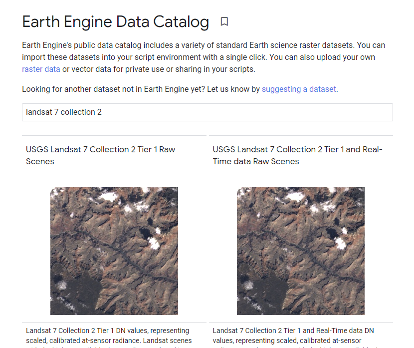
Now that we know how to view this information, let’s dive into some important remote sensing terminology.
3.4.2 Spatial Resolution
Spatial resolution relates to the amount of Earth’s surface area covered by a single pixel. For example, we typically say that Landsat 7 has “30 m” color imagery. This means that each pixel is 30 m to a side, covering a total area of 900 square meters of the Earth’s surface. The spatial resolution of a given data set greatly affects the appearance of images, and the information in them, when you are viewing them on Earth’s surface.
Next, we will visualize data from multiple sensors that capture data at different spatial resolutions, to compare the effect of different pixel sizes on the information and detail in an image. We’ll be selecting a single image from each ImageCollection to visualize. To view the image, we will draw them each as a color-IR image, a type of false-color image (described in detail in Chap. F1.1) that uses the infrared, red, and green bands. As you move through this portion of the course, zoom in and out to see differences in the pixel size and the image size.
3.4.2.1 Landsat Thematic Mapper
Thematic Mapper (TM) sensors were flown aboard Landsat 4 and 5. TM data have been processed to a spatial resolution of 30m, and were active from 1982 to 2012. Search for “Landsat 5 TM” and import the result called “USGS Landsat 5 TM Collection 2 Tier 1 Raw Scenes”. In this dataset, the three bands for a color-IR image are called “B4” (infrared), “B3” (red), and “B2” (green). Let’s now visualize TM data over San Francisco airport. Note that we can either define the visualization parameters as a variable (as in the previous code snippet) or place them in curly braces in the Map.addLayer function (as in this code snippet).
When you run this code, the TM image will display. Notice how many more pixels are displayed on your screen when compared to the MODIS image.
// TM
// Filter TM imagery by location and date.
var tmImage = tm .filterBounds(Map.getCenter())
.filterDate('1987-03-01', '1987-08-01')
.first();
// Display the TM image as a false color composite.
Map.addLayer(tmImage, {
bands: ['B4', 'B3', 'B2'], min: 0,
max: 100}, 'TM');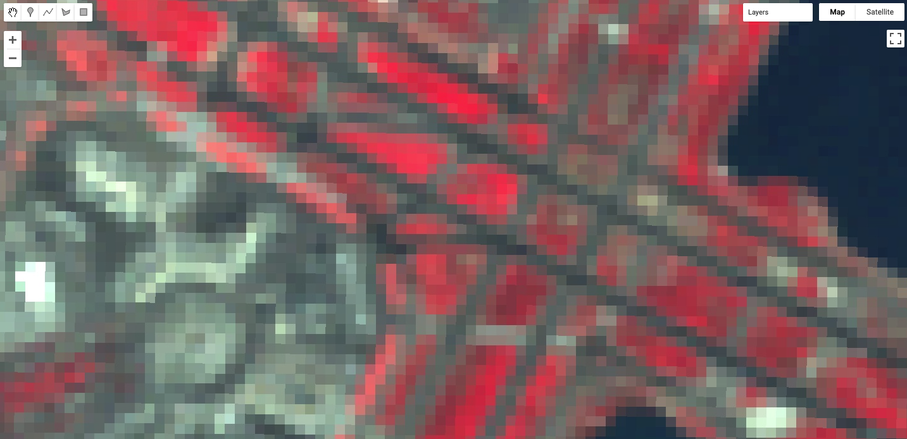
3.4.2.2 Sentinel-2 MultiSpectral Instrument
The MultiSpectral Instrument (MSI) flies aboard the Sentinel-2 satellites, which are operated by the European Space Agency. The red, green, blue, and near-infrared bands are captured at 10m resolution, while other bands are captured at 20m and 30m. The Sentinel-2A satellite was launched in 2015 and the 2B satellite was launched in 2017.
Search for “Sentinel 2 MSI” in the search bar, and add the “Sentinel-2 MSI: MultiSpectral Instrument, Level-1C” dataset to your workspace. Name it msi. In this dataset, the three bands for a color-IR image are called “B8” (infrared), “B4” (red), and “B3” (green).
// MSI
// Filter MSI imagery by location and date.
var msiImage = msi .filterBounds(Map.getCenter())
.filterDate('2020-02-01', '2020-04-01')
.first();
// Display the MSI image as a false color composite.
Map.addLayer(msiImage, {
bands: ['B8', 'B4', 'B3'],
min: 0,
max: 2000}, 'MSI');Compare the Sentinel imagery with the Landsat imagery, using the opacity slider. Notice how much more detail you can see on the airport terminal and surrounding landscape. The 10 m spatial resolution means that each pixel covers approximately 100 m2 of the Earth’s surface, a much smaller area than the TM imagery (900 m2).

3.4.2.3 National Agriculture Imagery Program (NAIP)
The National Agriculture Imagery Program (NAIP) is a U.S. government program to acquire imagery over the continental United States using airborne sensors. Data is collected for each state approximately every three years. The imagery has a spatial resolution of 0.5–2 m, depending on the state and the date collected.
Search for “naip” and import the data set for “NAIP: National Agriculture Imagery Program”. Name the import naip. In this dataset, the three bands for a color-IR image are called “N” (infrared), “R” (red), and “G” (green).
// NAIP
// Get NAIP images for the study period and region of interest.
var naipImage = naip.filterBounds(Map.getCenter())
.filterDate('2018-01-01', '2018-12-31')
.first();
// Display the NAIP mosaic as a color-IR composite.
Map.addLayer(naipImage, {
bands: ['N', 'R', 'G']
}, 'NAIP');The NAIP imagery is even more spatially detailed than the Sentinel-2 MSI imagery. However, we can see that our one NAIP image doesn’t totally cover the San Francisco airport. If you like, zoom out to see the boundaries of the NAIP image as we did for the Sentinel-2 MSI imagery.
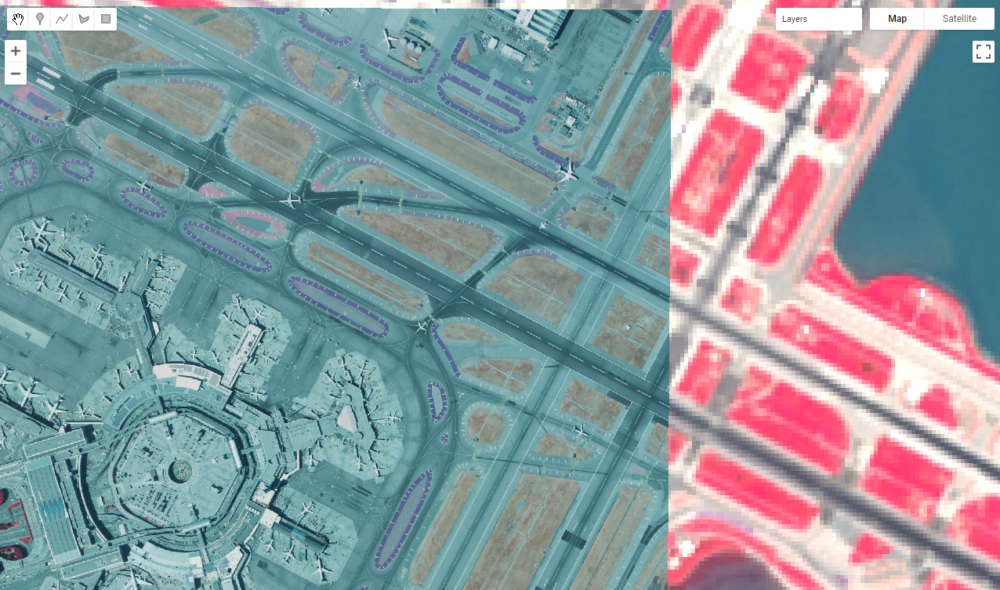
Each of the datasets we’ve examined has a different spatial resolution. By comparing the different images over the same location in space, you have seen the differences between the large pixels of Landsat 5, the medium pixels of Sentinel-2, and the small pixels of the NAIP. Datasets with large-sized pixels are also called “coarse resolution,” those with medium-sized pixels are also called “moderate resolution,” and those with small-sized pixels are also called “fine resolution.”
Code Checkpoint F13a. The book’s repository contains a script that shows what your code should look like at this point.
3.4.3 Temporal Resolution
Temporal resolution refers to the revisit time, or temporal cadence of a particular sensor’s image stream. Revisit time is the number of days between sequential visits of the satellite to the same location on the Earth’s surface. Think of this as the frequency of pixels in a time series at a given location.
3.4.3.1 Landsat
The Landsat satellites 5 and later are able to image a given location every 16 days. Let’s use our existing tm dataset from Landsat 5. To see the time series of images at a location, you can filter an ImageCollection to an area and date range of interest and then print it. For example, to see the Landsat 5 images for three months in 1987, run the following code:
/////
// Explore Temporal Resolution
/////
// Use Print to see Landsat revisit time
print('Landsat-5 series:', tm .filterBounds(Map.getCenter())
.filterDate('1987-06-01', '1987-09-01'));
// Create a chart to see Landsat 5's 16 day revisit time.
var tmChart = ui.Chart.image.series({
imageCollection: tm.select('B4').filterDate('1987-06-01', '1987-09-01'),
region: sfoPoint
}).setSeriesNames(['NIR']);Expand the features property of the printed ImageCollection in the Console output to see a List of all the images in the collection. Observe that the date of each image is part of the filename (e.g., LANDSAT/LT05/C02/T1/LT05_044034_19870628).

However, viewing this list doesn’t make it easy to see the temporal resolution of the dataset. We can use Earth Engine’s plotting functionality to visualize the temporal resolution of different datasets. For each of the different temporal resolutions, we will create a per-pixel chart of the NIR band that we mapped previously. To do this, we will use the ui.Chart.image.series function.
The ui.Chart.image.series function requires you to specify a few things in order to calculate the point to chart for each time step. First, we filter the ImageCollection (you can also do this outside the function and then specify the ImageCollection directly). We select the B4 (near infrared) band and then select three months by using filterDate on the ImageCollection. Next, we need to specify the location to chart; this is the region argument. We’ll use the sfoPoint variable we defined earlier.
// Create a chart to see Landsat 5's 16 day revisit time.
var tmChart = ui.Chart.image.series({
imageCollection: tm.select('B4').filterDate('1987-06-01', '1987-09-01'),
region: sfoPoint
}).setSeriesNames(['NIR']);By default, this function creates a trend line. It’s difficult to see precisely when each image was collected, so let’s create a specialized chart style that adds points for each observation.
// Define a chart style that will let us see the individual dates.
var chartStyle = {
hAxis: {
title: 'Date' },
vAxis: {
title: 'NIR Mean' },
series: { 0: {
lineWidth: 3,
pointSize: 6 }
},
};// Apply custom style properties to the chart.
tmChart.setOptions(chartStyle);
// Print the chart.
print('TM Chart', tmChart);When you print the chart, it will have a point each time an image was collected by the TM instrument (Fig. F1.3.15). In the Console, you can move the mouse over the different points and see more information. Also note that you can expand the chart using the button in the upper right-hand corner. We will see many more examples of charts, particularly in the chapters in Part F4.
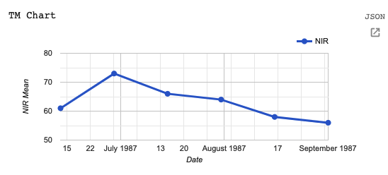
3.4.3.2 Sentinel-2
The Sentinel-2 program’s two satellites are in coordinated orbits, so that each spot on Earth gets visited about every 5 days. Within Earth Engine, images from these two sensors are pooled in the same dataset. Let’s create a chart using the MSI instrument dataset we have already imported.
// Sentinel-2 has a 5 day revisit time.
var msiChart = ui.Chart.image.series({
imageCollection: msi.select('B8').filterDate('2020-06-01', '2020-09-01'),
region: sfoPoint
}).setSeriesNames(['NIR']);
// Apply the previously defined custom style properties to the chart.
msiChart.setOptions(chartStyle);
// Print the chart.
print('MSI Chart', msiChart);
Compare this Sentinel-2 graph (Fig. F1.3.16) with the Landsat graph you just produced (Fig. F1.3.15). Both cover a period of six months, yet there are many more points through time for the Sentinel-2 satellite, reflecting the greater temporal resolution.
Code Checkpoint F13b. The book’s repository contains a script that shows what your code should look like at this point.
3.4.4 Spectral Resolution
Spectral resolution refers to the number and width of spectral bands in which the sensor takes measurements. You can think of the width of spectral bands as the wavelength intervals for each band. A sensor that measures radiance in multiple bands is called a multispectral sensor (generally 3–10 bands), while a sensor with many bands (possibly hundreds) is called a hyperspectral sensor.
Let’s compare the multispectral MODIS instrument with the hyperspectral Hyperion sensor aboard the EO-1 satellite, which is also available in Earth Engine.
3.4.4.1 MODIS
There is an easy way to check the number of bands in an image:
/////
// Explore spectral resolution
/////
// Get the MODIS band names as an ee.List
var modisBands = modisImage.bandNames();
// Print the list.
print('MODIS bands:', modisBands);
// Print the length of the list.
print('Length of the bands list:', modisBands.length());Note that not all of the bands are spectral bands. As we did with the temporal resolution, let’s graph the spectral bands to examine the spectral resolution. If you ever have questions about what the different bands in the band list are, remember that you can find this information by visiting the dataset information page in Earth Engine or the data or satellite’s webpage.
// Graph the MODIS spectral bands (bands 11-17).
// Select only the reflectance bands of interest.
var reflectanceImage = modisImage.select( 'sur_refl_b01', 'sur_refl_b02', 'sur_refl_b03', 'sur_refl_b04', 'sur_refl_b05', 'sur_refl_b06', 'sur_refl_b07'
);As before, we’ll customize the chart to make it easier to read.
// Define an object of customization parameters for the chart.
var options = {
title: 'MODIS spectrum at SFO',
hAxis: {
title: 'Band' },
vAxis: {
title: 'Reflectance' },
legend: {
position: 'none' },
pointSize: 3
};And create a chart using the ui.Chart.image.regions function.
// Make the chart.
var modisReflectanceChart = ui.Chart.image.regions({
image: reflectanceImage,
regions: sfoPoint
}).setOptions(options);
// Display the chart.
print(modisReflectanceChart);The resulting chart is shown in Fig. F1.3.17. Use the expand button in the upper right to see a larger version of the chart than the one printed to the Console.

3.4.4.2 EO-1
Now let’s compare MODIS with the EO-1 satellite’s hyperspectral sensor. Search for “eo-1” and import the “EO-1 Hyperion Hyperspectral Imager” dataset. Name it eo1. We can look at the number of bands from the EO-1 sensor.
// Get the EO-1 band names as a ee.List
var eo1Image = eo1 .filterDate('2015-01-01', '2016-01-01')
.first();
// Extract the EO-1 band names.
var eo1Bands = eo1Image.bandNames();
// Print the list of band names.
print('EO-1 bands:', eo1Bands);Examine the list of bands that are printed in the Console. Notice how many more bands the hyperspectral instrument provides.
Now let’s create a reflectance chart as we did with the MODIS data.
// Create an options object for our chart.
var optionsEO1 = {
title: 'EO1 spectrum',
hAxis: {
title: 'Band' },
vAxis: {
title: 'Reflectance' },
legend: {
position: 'none' },
pointSize: 3
};
// Make the chart and set the options.
var eo1Chart = ui.Chart.image.regions({
image: eo1Image,
regions: ee.Geometry.Point([6.10, 81.12])
}).setOptions(optionsEO1);
// Display the chart.
print(eo1Chart);The resulting chart is seen in Fig. F1.3.18. There are so many bands that their names only appear as “…”!

If we click on the expand icon in the top right corner of the chart, it’s a little easier to see the band identifiers, as shown in Fig. F1.3.19.

Compare this hyperspectral instrument chart with the multispectral chart we plotted above for MODIS.
Code Checkpoint F13c. The book’s repository contains a script that shows what your code should look like at this point.
3.4.5 Per-Pixel Quality
As you saw above, an image consists of many bands. Some of these bands contain spectral responses of Earth’s surface, including the NIR, red, and green bands we examined in the Spectral Resolution section. What about the other bands? Some of these other bands contain valuable information, like pixel-by-pixel quality-control data.
For example, Sentinel-2 has a QA60 band, which contains the surface reflectance quality assurance information. Let’s map it to inspect the values.
/////
// Examine pixel quality
/////
// Sentinel Quality Visualization.
var msiCloud = msi .filterBounds(Map.getCenter())
.filterDate('2019-12-31', '2020-02-01')
.first();
// Display the MSI image as a false color composite.
Map.addLayer(msiCloud,
{
bands: ['B8', 'B4', 'B3'],
min: 0,
max: 2000 }, 'MSI Quality Image');
Map.addLayer(msiCloud,
{
bands: ['QA60'],
min: 0,
max: 2000 }, 'Sentinel Quality Visualization');Use the Inspector tool to examine some of the values. You may see values of 0 (black), 1024 (gray), and 2048 (white). The QA60 band has values of 1024 for opaque clouds, and 2048 for cirrus clouds. Compare the false-color image with the QA60 band to see these values. More information about how to interpret these complex values is given in Chap. F4.3, which explains the treatment of clouds.
Code Checkpoint F13d. The book’s repository contains a script that shows what your code should look like at this point.
3.4.6 Metadata
In addition to band imagery and per-pixel quality flags, Earth Engine allows you to access substantial amounts of metadata associated with an image. This can all be easily printed to the Console for a single image.
Let’s examine the metadata for the Sentinel-2 MSI.
/////
// Metadata
/////
print(‘MSI Image Metadata’, msiImage);
Examine the object you’ve created in the Console (Fig. F1.3.20). Expand the image name, then the properties object.

Fig. F1.3.20 Checking the “CLOUDY_PIXEL_PERCENTAGE” property in the metadata for Sentinel-2
The first entry is the CLOUDY_PIXEL_PERCENTAGE information. Distinct from the cloudiness flag attached to every pixel, this is an image-level summary assessment of the overall cloudiness in the image. In addition to viewing the value, you might find it useful to print it to the screen, for example, or to record a list of cloudiness values in a set of images. Metadata properties can be extracted from an image’s properties using the get function, and printed to the Console.
// Image-level Cloud info
var msiCloudiness = msiImage.get(‘CLOUDY_PIXEL_PERCENTAGE’);
print(‘MSI CLOUDY_PIXEL_PERCENTAGE:’, msiCloudiness);
Code Checkpoint F13e. The book’s repository contains a script that shows what your code should look like at this point.
Conclusion
A good understanding of the characteristics of your images is critical to your work in Earth Engine and the chapters going forward. You now know how to observe and query a variety of remote sensing datasets, and can choose among them for your work. For example, if you are interested in change detection, you might require a dataset with spectral resolution including near-infrared imagery and a fine temporal resolution. For analyses at a continental scale, you may prefer data with a coarse spatial scale, while analyses for specific forest stands may benefit from a very fine spatial scale.
References
Fisher JRB, Acosta EA, Dennedy-Frank PJ, et al (2018) Impact of satellite imagery spatial resolution on land use classification accuracy and modeled water quality. Remote Sens Ecol Conserv 4:137–149. https://doi.org/10.1002/rse2.61
3.1.2.1 Comments
While writing code, it is useful to add a bit of text to explain the code or leave a note for yourself. It is a good programming practice to always add comments in the code explaining each step. In JavaScript, you can prefix any line with two forward slashes // to make it a comment. The text in the comment will be ignored by the interpreter and will not be executed.
Congratulations! You have learned enough JavaScript to be able to use the Earth Engine API. In the next section, you will see how to access and execute Earth Engine API functions using JavaScript.
Code Checkpoint F10a. The book’s repository contains a script that shows what your code should look like at this point.